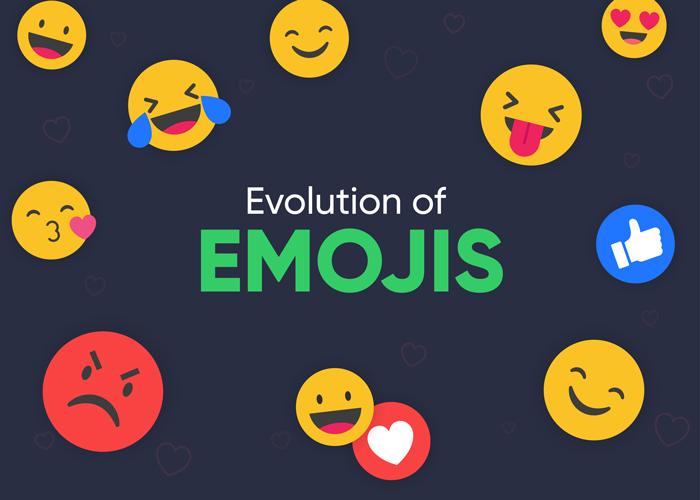

Introduction
Igrew up sending letters to my loved ones during the gold rush days of Johannesburg, A rotary dial phone was an unfathomable improvement to communication. I have lived long enough to experience the dial up internet connection, and I was mesmerised by the speed of reaching my loved ones in Johannesburg. The email, and a response within five minutes were the talk of the town, and businesses boasted about that.
If I, 64-year-old James Dladla would have embarked on journey to improve my photography qualifications in 2021, I would probably have to learn online, have my entertainment online, and share my own lectures to my Kathlehong students online. But I am not that tech savvy, and I am excluded from all these affordances of the web.
Online Shopping.

As the pandemic continue to force our lives to be almost entirely online, new generations not only use digital apps for school and work, but they also use them as exercise coaches and online DIY mentors. These activities have become a clear line drawn as a digital demarcation between the young and the old.
When a lockdown regulation restricts people from freely walking into the Yeoville market, simple activities liked basic shopping have become a real nightmare for our community seniors like me. The closure of stores and the security measures of the quarantine can make those who have never made online purchases feel marginalized due to the digital divide.
Some scholars have questioned if perhaps this superhighway and the affordances of these forking paths sufficiently carter for accessibility and inclusivity. In their scholarly article called Battle for the soul of the Internet, Elmer-Dewitt and Jackson (1994), contends that the internet, is being overrun by lawyers (selfish rules and regulations), and merchants (advertising and marketing) while the idea of inclusivity is being daily thwarted.
Socialisation.
When my nieces held a birthday party via MS Teams, and sent me a Tik Tok video of the party highlights, I could not understand how this could be fun, let alone fathom the whole idea of meeting online. After the “party” my niece Tawanda rested over a Netflix movie. How could this be resting?
My eyes could have been bleeding from all this screen exposure by now. Although these new virtual activities are not exclusive to younger ones, they are more natural for those who are used to the technology that allows them to do it. In that sense, what about us, the older adult population? How do we give continuity to our social life, which is so necessary, above all, for the older adults who live alone?
The active ageing activities that me and my friends are involved in are no longer feasible, yet also, these cannot be taken online. No one wants to age online. No more dance clubs, yoga, Zumba and the favourite umqombothi round table talks.
The emoji dilemma!
With meanings changing over time, the United Kingdom’s ambassador to Zimbabwe Melanie Robinson learnt the hard way one Saturday weekend (The Standard 2020). Who knows what emojis are? How can their communication be so strong and heard by millions at a time?
Eggplants, just like the peach emoji, while innocent, have been used to imply messages of a sexual nature, but that memo may have skipped the diplomat until one weekend (The Standard 2020). So, I use my son’s tablet and scroll through all these emojis, and I am not confident which one to use. I think for me and my peers it is safe to stick to text and avoid the Robinson saga.
Robinson tweeted to Zimbabweans “I’m eating a lot of (eggplant emoji) and (spinach emoji),” Jewels @jewels_bbyju wrote: “Ambassador, too much of (eggplant emojis) might not be good for social distancing.”

Bibliography
UK Ambassador to Zim falls foul of emoji etiquette | The Standard. Thestandard.co.zw. (2020). Retrieved 18 April 2021, from https://www.thestandard.co.zw/2020/04/26/uk-ambassador-zim-falls-foul-emoji-etiquette/.